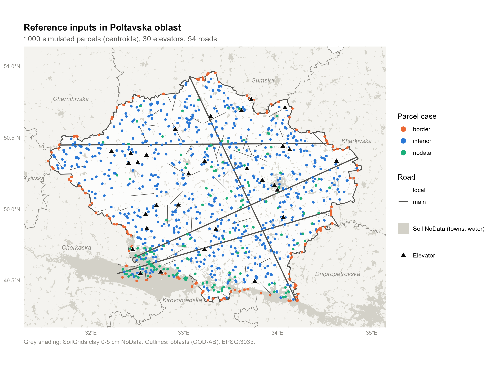

Просторові коваріати для масової оцінки сільськогосподарських земель
Еталонний набір даних для Полтавської області, Україна
Мета
Проєкт задає базовий рівень (baseline) для розрахунку просторових коваріат для масової оцінки сільськогосподарських земель в Україні.
Він створює еталонний набір даних: фіксований набір із 1 000 змодельованих земельних ділянок, для кожної з яких розраховано 81 просторову коваріату на основі контрольованого набору вхідних даних. Інші реалізації (інше програмне забезпечення, інструменти чи команди) можуть виконати ті самі розрахунки для тих самих ділянок і порівняти свої результати з цими.
Коваріати поділено на чотири групи:
| Група | Змінних | Що вимірює | Сторінка |
|---|---|---|---|
| Відстані | 6 | Відстань на сфері до найближчого елеватора, магістральної та місцевої дороги від центроїда ділянки та від її краю | Відстані |
| Ґрунт | 20 | Десять властивостей верхнього шару ґрунту (0–30 см) за SoilGrids: середнє по полігону ділянки та значення в центроїді | Ґрунт |
| Рельєф | 6 | Висота, крутизна схилу та експозиція за 30-метровою цифровою моделлю висот (ЦМВ) Copernicus, по всьому полігону ділянки | Рельєф |
| Посівний покрив | 49 | Частка ділянки в кожній із 7 груп земного покриву, для кожного року 2019–2025 | Посівний покрив |
Усі 81 змінну наведено на сторінці Результати.
Територія дослідження
Територія дослідження — Полтавська область (P-код COD-AB UA53, англійська назва в COD-AB “Poltavska”). Вона добре підходить для еталонного тесту, бо має:
- міста (Полтава, Кременчук, Лубни та інші), де ґрунтові карти не містять даних;
- річку Дніпро та Кременчуцьке водосховище, де ґрунтові карти не містять даних, а ЦМВ пласка;
- сім сусідніх областей, тож частина ділянок перетинає межу області;
- смугу на північ від 50° пн. ш., де тайли ЦМВ Copernicus мають грубіший крок за довготою.

Для чого цей набір даних
- Еталон. Ділянки, елеватори та дороги змодельовано один раз і збережено в репозиторії. Вони ніколи не змінюються, тому результати різних інструментів можна порівнювати рядок за рядком.
- Складні випадки — навмисно. 15 % ділянок перетинають межу області, а 15 % розташовані на територіях NoData ґрунтових карт (міста, річки, водосховище), щоб перевірити, як кожна реалізація працює з межами та пропущеними даними.
- Явні методи. Кожне рішення (відстань на сфері, середні по полігону, зважені за часткою покриття, порядок заповнення пропущених ґрунтових значень, правило для посівів 2025 року) задокументовано на цих сторінках поруч із кодом, що його реалізує.
Результат — одна довга таблиця parcel_id | variable | value | source із 81 000 рядків (див. Результати).
Швидкий старт
Клонуйте репозиторій і відкрийте його в R (4.6 або новішій версії) з кореня проєкту.
Відновіть пакети:
renv::restore()Укажіть шляхи до власних ґрунтових растрів і растрів посівного покриву в
00-setup.R(soil_dir,crop_dirта вісім імен файлівcrop_*). Див. Дані.Один раз завантажте публічні вхідні дані (межі областей і тайли ЦМВ):
source("00b-download.R")Запустіть скрипти по черзі, кожен через
source(). Кожен скрипт сам підключає00-setup.R.source("02-diagnostics.R") source("03-distance.R") source("04-soil.R") source("05-relief.R") source("06-crop.R") source("07-crop-2025.R") source("21-combine.R") source("22-descriptives.R")
01-simulate-reference.R не входить до звичайного запуску. Він один раз створив еталонні вхідні дані, збережені в репозиторії, і зупиняється з помилкою, якщо вони вже існують. Повний порядок запуску з вхідними та вихідними даними наведено на сторінці Конвеєр обробки.
Репозиторій
Код: https://github.com/EBukin/ukrMassValuationSpatialExtract. Репозиторій не містить зовнішніх даних: ґрунтові растри та растри посівного покриву надає користувач, публічні вхідні дані завантажує скрипт, а в репозиторії зберігаються лише змодельовані еталонні вхідні дані, результати та цей вебсайт.